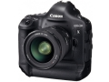
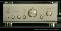
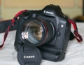

器材库 > 35mm画幅可换镜头数码相机 > EOS-1D X

规格总览
产品类型
35mm画幅可换镜头数码相机
发布日期
2011-10-18
影像规格
影像传感器
CMOS
影像传感器尺寸
36×24mm
有效像素
1810万
影像处理器
双DIGIC 5+
色彩滤镜
RGB原色滤镜
低通滤镜
图像传感器前，固定式
色彩空间
sRGB和Adobe RGB
最大解像度
5184×3456
静态图像尺寸
L：約1790万（5184×3456）像素/M1：約1420万（4608×3072）像素/M2：約800万（3456×2304）像素/S：約450万（2592×1728）像素/RAW：約1790万（5184×3456）像素/M-RAW ：約1010万（3888×2592）像素/S-RAW ：約450万（2592×1728）像素
静态图像格式
JPEG, RAW, RAW+JPEG
画幅比
3:2
短片尺寸
1920 x 1080 （30p/25p/24p）；1280 x 720 （60p/50p）；640 x 480 （30p/25p）
短片格式
MPEG4-AVC/H.264
短片音效
MPEG-4 AVC/H.264 可变（平均）比特率
除尘系统
全新超声波传送除尘方式
镜头和对焦
镜头卡口
Canon EF
兼容镜头
佳能EF系列镜头（EF-S镜头除外）
对焦系统类型
TTL辅助影像重合，相位检测
对焦点
61个对焦点（41个十字型对焦点）
对焦模式
单次自动对焦、人工智能伺服自动对焦、手动对焦（MF）
手动对焦
支持
曝光控制
测光系统
252区TTL全开光圈测光
测光模式
中央重点测光, 多分区评价测光, 点测光, 局部测光
测光范围
0EV~20EV
曝光模式
P（程序自动曝光）, B门, A（光圈优先自动曝光）, S（快门速度优先自动曝光）, M（手动测光曝光）
快门类型
电子控制，纵走式，焦平面快门
快门速度
1/8000 - 30秒，B门；闪光同步速度：1/250秒
曝光补偿
±3EV以1/3或1/2EV级调整
自动曝光锁
有
ISO感光度
100, 200, 400, 800, 1600, 3200, 6400, 12800, 自动, 可扩展至50-102400, 51200, 可扩展至50, 102400, 204800
白平衡
日光, 闪光灯, 色温调节, 阴天, 荧光灯, 自定义, 阴影, 自动, 钨丝灯, 预设白平衡, 白平衡包围
自拍
10秒, 2秒
连拍
超高速连拍：14张/秒；高速连拍：12张/秒；低速连拍：3张/秒
闪光灯
闪光补偿
±3EV以1/3或1/2EV级调整
外接闪光灯
EX系列闪光灯（能用相机设置功能）
PC端子
有
取景器/显示屏
取景器
眼平五棱取景器
取景范围
100%
取景放大倍率
0.76倍
屈光度调节范围
-3.0 ~ +1.0
反光镜
快速瞬回半透明
景深预视
有
LCD类型
彩色TFT LCD
LCD尺寸
3.2英寸
LCD像素
104万
视野率
100%
亮度调节级数
7级
Live View
有
Live View 显示
两种类型网格线
Live View 对焦模式
实时模式、面部优先实时模式（反差检测）、快速模式（相差检测） ；手动对焦（能放大5倍/10倍）
文件输入/输出
存储卡
CF
数据接口
USB2.0
视频/音频接口
HDMI 输出, MIC 输入, Video 输出 (NTSC/PAL)
扩充系统端子
IEEE802.3u（Ethernet 10BASE-T、100BASE-TX、1000BASE-T）
支持打印协议
PictBridge, DPOF
电源
电池
LP-E4N/LP-E4
外接电源
可以通过交流电适配器套装ACK-E4使用交流电（另售）
机身规格
材质
镁合金机身，防尘防水滴
颜色
黑色
尺寸
158×163.6×82.7mm
其它
配件端口
遥控线, GPS装置
支持语言
中文（简体）
工作温度
0-45℃
工作湿度
低于或等于85%
附件
EOS数码处理光盘，软件使用手册光盘，电池充电器 LC-E4（含电源线），锂电池 LP-E4，连接线保护器（带安装螺丝），相机宽背带 L6，立体声视频连接线 AVC-DC400ST，接口连接线 IFC-200U
备注
支持语言25种
Nickhephoto2015-11-25 15:114.44 分
操作性 5.00功能性 5.00美观性 5.00趣味性 4.50耐用性 5.00性价比 3.00解像力 3.50色彩还原 4.50
tictoc9122015-09-05 17:394.81 分
操作性 5.00功能性 5.00美观性 5.00趣味性 5.00耐用性 5.00性价比 3.50解像力 5.00色彩还原 5.00
影色无限2015-03-07 14:074.75 分
操作性 5.00功能性 5.00美观性 5.00趣味性 4.50耐用性 5.00性价比 4.50解像力 4.50色彩还原 4.50

钉子大大2015-01-17 17:535 分
操作性 5.00功能性 5.00美观性 5.00趣味性 5.00耐用性 5.00性价比 5.00解像力 5.00色彩还原 5.00
丛林日记20082014-08-22 11:224.75 分
操作性 5.00功能性 5.00美观性 4.50趣味性 5.00耐用性 5.00性价比 4.50解像力 4.50色彩还原 4.50
100macro2014-07-18 07:295 分
操作性 5.00功能性 5.00美观性 5.00趣味性 5.00耐用性 5.00性价比 5.00解像力 5.00色彩还原 5.00
大沈阳人像摄影2014-02-13 15:155 分
操作性 5.00功能性 5.00美观性 5.00趣味性 5.00耐用性 5.00性价比 5.00解像力 5.00色彩还原 5.00
citicman2014-01-03 22:005 分
操作性 5.00功能性 5.00美观性 5.00趣味性 5.00耐用性 5.00性价比 5.00解像力 5.00色彩还原 5.00
jishou2013-11-27 22:554.88 分
操作性 5.00功能性 5.00美观性 5.00趣味性 5.00耐用性 5.00性价比 5.00解像力 5.00色彩还原 4.00

100macro2013-10-20 23:39
长乐2013-07-28 10:114.69 分
操作性 5.00功能性 5.00美观性 5.00趣味性 5.00耐用性 5.00性价比 2.50解像力 5.00色彩还原 5.00
fiat20092013-06-22 22:253.81 分
操作性 4.50功能性 5.00美观性 4.50趣味性 4.50耐用性 2.50性价比 2.50解像力 3.50色彩还原 3.50
小沈阳拳打赵本山2013-04-18 15:114.88 分
操作性 5.00功能性 5.00美观性 5.00趣味性 5.00耐用性 5.00性价比 4.00解像力 5.00色彩还原 5.00
喜欢小麦穗2013-02-20 20:324.63 分
操作性 4.50功能性 5.00美观性 5.00趣味性 4.50耐用性 5.00性价比 4.50解像力 4.00色彩还原 4.50
ppkxiao2013-02-05 16:404.88 分
操作性 5.00功能性 5.00美观性 5.00趣味性 5.00耐用性 5.00性价比 4.50解像力 4.50色彩还原 5.00
小沈阳拳打赵本山2013-02-02 14:52
图丽大侠2013-01-25 01:424.5 分
操作性 4.50功能性 5.00美观性 4.50趣味性 4.50耐用性 5.00性价比 4.00解像力 4.50色彩还原 4.00
丛林日记20082013-01-24 16:56
我像雪花天上来2013-01-20 18:274.38 分
操作性 4.50功能性 5.00美观性 5.00趣味性 4.00耐用性 5.00性价比 3.00解像力 4.00色彩还原 4.50
hjcbq5012013-01-16 17:584.94 分
操作性 5.00功能性 5.00美观性 5.00趣味性 5.00耐用性 5.00性价比 4.50解像力 5.00色彩还原 5.00
sunxun272013-01-13 13:274.56 分
操作性 4.50功能性 4.50美观性 5.00趣味性 4.50耐用性 5.00性价比 4.00解像力 4.00色彩还原 5.00
100996442013-01-13 12:465 分
操作性 5.00功能性 5.00美观性 5.00趣味性 5.00耐用性 5.00性价比 5.00解像力 5.00色彩还原 5.00
cpress2013-01-11 11:20
北极星光2013-01-08 20:174.06 分
操作性 4.50功能性 4.50美观性 3.50趣味性 2.50耐用性 4.00性价比 4.00解像力 4.50色彩还原 5.00
LNight2013-01-04 20:044.81 分
操作性 5.00功能性 5.00美观性 5.00趣味性 5.00耐用性 5.00性价比 4.00解像力 4.50色彩还原 5.00
yichenglaosou2012-12-23 05:504.25 分
操作性 4.50功能性 4.50美观性 3.50趣味性 4.50耐用性 4.50性价比 3.50解像力 4.50色彩还原 4.50
bxryb2012-11-26 09:104.81 分
操作性 5.00功能性 5.00美观性 5.00趣味性 4.50耐用性 5.00性价比 4.00解像力 5.00色彩还原 5.00
水柔2012-11-22 10:214.63 分
操作性 5.00功能性 5.00美观性 5.00趣味性 5.00耐用性 5.00性价比 2.00解像力 5.00色彩还原 5.00
克路2012-07-09 01:024.88 分
操作性 5.00功能性 5.00美观性 5.00趣味性 5.00耐用性 5.00性价比 4.00解像力 5.00色彩还原 5.00
wanghuang57142012-06-29 22:272.5 分
操作性 2.50功能性 2.50美观性 2.50趣味性 2.50耐用性 2.50性价比 2.50解像力 2.50色彩还原 2.50
kingroc2012-06-29 21:434.94 分
操作性 5.00功能性 5.00美观性 5.00趣味性 5.00耐用性 5.00性价比 4.50解像力 5.00色彩还原 5.00
明月照沟渠2012-06-04 20:43
Z号巡洋舰2012-04-27 20:315 分
操作性 5.00功能性 5.00美观性 5.00趣味性 5.00耐用性 5.00性价比 5.00解像力 5.00色彩还原 5.00
Pantrol2012-03-24 20:174.63 分
操作性 5.00功能性 4.50美观性 4.50趣味性 4.00耐用性 5.00性价比 4.00解像力 5.00色彩还原 5.00
momney2012-03-17 16:135 分
操作性 5.00功能性 5.00美观性 5.00趣味性 5.00耐用性 5.00性价比 5.00解像力 5.00色彩还原 5.00
zmghqq2012-03-08 14:29
kqsj2012-02-20 11:52
Z号巡洋舰2012-01-26 23:54
jsqy2012-01-13 18:255 分
操作性 5.00功能性 5.00美观性 5.00趣味性 5.00耐用性 5.00性价比 5.00解像力 5.00色彩还原 5.00
李淑昌2012-01-08 21:585 分
操作性 5.00功能性 5.00美观性 5.00趣味性 5.00耐用性 5.00性价比 5.00解像力 5.00色彩还原 5.00
西木一2011-12-30 16:224.5 分
操作性 5.00功能性 5.00美观性 5.00趣味性 5.00耐用性 5.00性价比 2.50解像力 4.50色彩还原 4.00
西木一2011-12-30 16:21
nishiwer2011-12-30 11:280.56 分
操作性 1.00功能性 0.50美观性 0.50趣味性 0.50耐用性 0.50性价比 0.50解像力 0.50色彩还原 0.50
G.friend2011-12-06 09:272.31 分
操作性 1.00功能性 2.00美观性 3.00趣味性 4.00耐用性 5.00性价比 2.00解像力 1.00色彩还原 0.50
llww68112011-11-26 17:234.81 分
操作性 4.50功能性 4.50美观性 5.00趣味性 5.00耐用性 5.00性价比 5.00解像力 4.50色彩还原 5.00
小沈阳拳打赵本山2011-11-22 18:18
zouhc2011-10-25 11:424.88 分
操作性 4.50功能性 5.00美观性 5.00趣味性 5.00耐用性 5.00性价比 5.00解像力 4.50色彩还原 5.00
wolai2011-10-22 19:443.75 分
操作性 4.00功能性 4.00美观性 4.00趣味性 3.50耐用性 4.00性价比 2.50解像力 4.00色彩还原 4.00
mllppp2011-10-20 16:324.75 分
操作性 5.00功能性 5.00美观性 5.00趣味性 5.00耐用性 5.00性价比 3.00解像力 5.00色彩还原 5.00
fengq1002011-10-19 19:52
产品图 / 样片
评测 / 相关文章
- 详细内容 （存档）
- 王者归来 佳能EOS-1D X详细评测 （存档）
- 点评佳能EOS-1D X （存档）
- ［影像］抛砖引玉 佳能EOS-1D X人像实拍 （存档）
- ［试用］与佳能EOS 1DX那些陈年往事 （存档）
- ［试用］佳能1DX+1DX II感受奥运激情 （存档）
- ［资讯］谁是长曝王 各家机型高ISO长曝控躁PK （存档）
- ［试用］把妹利器 为佳能1DX挑无线实时控制器 （存档）
- ［试用］EOS-1D X——你掌控瞬间的秘密武器 （存档）
- ［资讯］IR公布尼康D5与1DX高感对比测试 （存档）
- ［试用］因快速所以精彩 1DX帮你掌控瞬间 （存档）
- ［试用］佳能1DX引发的故事—买了1DX，真心舒坦了 （存档）
- ［资讯］佳能发布EOS-1D X 2.0.3版固件升级 （存档）
相关文章
- ［试用］佳能1DX引发的故事—买了1DX，真心舒坦了 （存档）
- ［资讯］佳能发布EOS-1D X 2.0.3版固件升级 （存档）
- ［资讯］探秘EOS传奇（上） （存档）
- ［试用］新老机皇的赛车场之战 （存档）
- ［试用］EOS 1D-X行摄斯里兰卡鱼市 （原站已下线）
- ［试用］孙晓岭谈佳能EOS-1D X拍黄石 （原站已下线）
- ［资讯］日本JCII评选出11款2012年日本历史性相机 （存档）
- ［资讯］无忌小编带您走进珠海航展 （原站已下线）
- ［资讯］佳能公布EOS-1D X最新固件 （原站已下线）
- ［试用］王者归来 佳能EOS-1D X详细评测 （存档）
- ［影像］抛砖引玉 佳能EOS-1D X人像实拍 （存档）
- ［试用］与佳能EOS 1DX那些陈年往事 （存档）
- ［试用］佳能1DX+1DX II感受奥运激情 （存档）
- ［资讯］谁是长曝王 各家机型高ISO长曝控躁PK （存档）
- ［试用］把妹利器 为佳能1DX挑无线实时控制器 （存档）
- ［试用］EOS-1D X——你掌控瞬间的秘密武器 （存档）
- ［资讯］IR公布尼康D5与1DX高感对比测试 （存档）
- ［试用］因快速所以精彩 1DX帮你掌控瞬间 （存档）